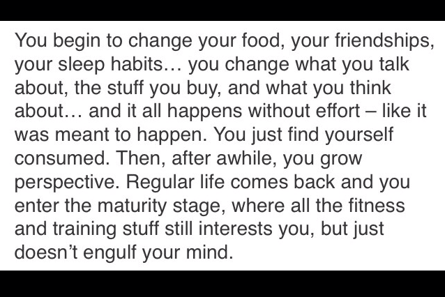

Understanding Orthorexia

IMG_4565
I know in the past I've mentioned my issues with disordered eating. From ages 15-20, I was overweight and wanted to change. I thought the only way to lose weight was to severely restrict calories. I hate to call it anorexia for a BMI of 31, but that's essentially what it was in terms of lacking food. Of course, this never worked for long term weightloss. At age 20, I finally understood HEALTHY eating and exercising, which is what ultimately led to my successful weightloss and maintenance.
What I've merely hinted at in the past, but HAVEN'T really discussed with many, is how my healthy eating eventually led to another form of disordered eating called orthorexia.
What is orthorexia?
Orthorexia is not an officially recognized eating disorder, but it is just as consuming and harmful in my opinion. It is best described as the obsession to eat healthy. An unhealthy obsession with healthy. This might be hard for many to understand; my boyfriend was by my side through the journey and he still doesn't get it... I consider orthorexia a fear of food.
I think back on my emotions then and I just think of fear and anxiety. Extreme anxiety. Fear of eating the "wrong" food, fear of eating "toxic" ingredients/chemicals that would knock years off my life, fear of storing fat from some "weight-sabotaging" ingredient... I was afraid if I had any sugar, I'd fall back into my unhealthy days and crave/consume it 24/7. I was afraid of certain foods for reasons that made sense to me at the time, but were honestly all made-up rules from my imagination and seem so absurd now. Timing of certain foods/food groups freaked me out. I was afraid people would see me eating something unhealthy, then judge me and assume I'd "fallen off the bandwagon". And god forbid I eat food prepared by anyone else because surely they'd slip in a half stick of butter or a tablespoon of sugar to screw with me.
Where did these rules stem from and how did this begin? Well, in all honesty, as much as I love Instagram and how it's changed my life, I can say with confidence that it developed from Instagram influence. My journey into healthy eating began harmlessly; I switched to whole grain pasta, I got low fat cheese, I bought sugar free pudding mix, I snacked on apples... But then I started to avoid certain foods I didn't consider healthy enough. The low fat cheese became "bad" to me, sugar free pudding mix was the devil's powder because it had chemicals, apples could only be eaten after a workout because the sugar content will be used to restore glucose levels so it's "okay" then... I suppose you could argue that if you want to "eat clean", avoiding low fat cheese and sugar free pudding makes sense, but I started to avoid natural, otherwise healthy foods too. I was afraid of coconut, dried fruit (even the no sugar added kinds), any nuts (except almonds were "okay" by my subjective rules), and more... I could make an endless list. But the point is, I made ridiculous rules based on what I perceived was the most perfect way of eating. The perfect way of eating from what I observed on Instagram. I modelled "okay" foods and "bad" foods based on what the people I looked up to were eating. I wouldn't pin it on any specific person or account, it was just a culmination of influences. Eating what they eat would allow me to look like them right? Wrong.
I let this take over my life. I would let myself go hungry at family events because I was afraid the food was "toxic" (toxic to me meaning that there were heaps of butter/oil/sugar/whatever in it). I would avoid dinners out at restaurants unless I was certain I could trust the restaurant to bring me grilled chicken and steamed broccoli, no seasonings or oils added. The tears and breakdowns were so emotionally taxing I'd just try to avoid restaurants altogether. And even when I got the courage to eat out, I always convinced myself they screwed up and added "junk". I remember taking a vacation to visit a friend in March 2012, when my orthorexia was beginning to really manifest. Grocery shopping for me for the week was one of the most frustrating things for him; he didn't say it, but I could tell. He'd suggest food after food, and I'd decline it all. "Why not this?" I'd have no reasonable answer... All I could do was fumble over words and say I just don't eat it. This is how my social interactions became for about 6-8 months.
How I started to overcome it, was I first realized WHAT was going on. I had a problem. I was socially withdrawn and physically underweight. I told my boyfriend and my mom (who I was living with at the time) what I was going through. And I asked if they could help. I asked them "You know when you offer food and I decline? Keep doing that. Except pressure me not to decline. Please. Just keep offering." I asked them to question my silly rules of "good" and "bad" foods and help me gain perspective. I also asked them to remain patient with me... And they were. You can hope that a person will change for the better, but you can't force it. Just be supportive and push their buttons, question their logic, but never make them feel stupid or inferior for their thoughts and actions. Most of the time I was fully aware that my thoughts were twisted and ridiculous, but you just. can't. help it. So they treated me exactly as I asked and remained patient, and I'd say it went successfully.
I don't talk about this issue often because honestly, I still deal with traces of it. Yes, almost a year and a half after making changes to overcome it. Orthorexia now does not affect my daily routine, but there are instances 1-2x a week that remind me I'm still constantly winning minor battles. I still can't discern if I avoid cheese because I honestly don't like it or because I'm afraid of it. I still couldn't give you a reason why I refuse to eat honey/agave/maple syrup. Last week, I had a VitaTop (processed dessert type snack) and was okay with it. This morning, I had apples with breakfast, not postworkout, and was okay with it. It's embarrassing to announce publicly, but privately I am so proud. Little hurdles like this give me anxiety, but slowly and surely it really does get easier. Rather than letting it consume my day as I would before, it's a fleeting, brief moment of anxiety.
I have always held the belief that someone that faces/faced an eating disorder will always struggle with disordered eating, no matter what. As dismal as that sounds, I believe we are biologically more prone to the thoughts of disordered eating and body issues. The thing that changes is how you deal with those thoughts and how you manage yourself. I will admit - I don't know how to eat. I just don't. I grew up overweight as an only-child in a well-off family with excess food. Food is yummy so I ate it. Then I restricted my food for years. I have been a vegetarian. I have done Whole30. I have dieted down. I have bulked. And I can tell you still, I don't know how to eat. I don't know portions. My body, eyes, and logic can visualize the proper amount of food, the inner disordered eating thoughts will always tell me it's too much, and my inner foodie will always remind me how delicious food is and that I should eat in excess. So that's where the struggle lies.
Programs like IIFYM (if it fits your macros) can really help people with similar mindsets like this. I would really recommend looking into it for others. While it's not for everyone, for me it helps me be at ease with eating the previously considered "bad" foods. I very leniently track macros, and don't stress if they vary from day to day. I also take frequent breaks from counting because it is time consuming and eventually makes you feel controlled by it. It's all about some give and take.
TL;DR: Please don't restrict foods. Live life. There are more important things than what your macros were 4 days ago and if other people think you're eating healthy or not.
Update 8 years later: This is a great relevant article to read on how to develop a healthy relationship with food. While I believe a lot of my perspective still holds true to this day, 8 years later at the age of 31 I’d like to add that I believe that healing trauma & the reasons behind perfectionism & the need to please others has really aided in overcoming this coping mechanism and not falling back into it. Orthorexia and any other ED is a coping mechanism, so the goal is to figure out healthier ways to cope. I still believe that someone with a history of ED has to stay on top of it, I have a more optimistic view for life after ED; I do believe that you can live a life not fixated on food; I do believe that you can learn to trust your body to eat without overthinking and overcontrolling it. It’s not easy and clearly it’s taken me years to figure out but I do have hope for everyone. It gets better than you can even imagine - better than I shared originally.